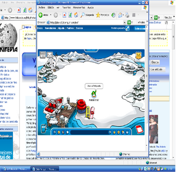
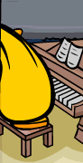

Club Penguin
 De: La Frikipedia, la enciclopedia extremadamente seria.
De: La Frikipedia, la enciclopedia extremadamente seria.
De la serie Videojuegos:
Club Penguin

Pingüino drogado atacando al banco central pingüino (B.C.P).
| Desarrollado por:
|
Juegos para maricones
|
| Distribuido por:
|
Algún Dissnney (o como se llame)
|
| Diseñado por:
|
Mi tía
|
| Motor
|
2 pingüinos caballos
|
| Género(s)
|
Droga, conquista, niños mimados, etc.
|
| Fecha de lanzamiento:
|
No tengo ni puta idea, creo que Dios jugó crucificado.
|
| Modos de juego:
|
Marihuana, Cocaina, Extasis, y te haces un igloo de mierda.
|
| Requisitos:
|
Ser un pingüino.
|
| Disponible en:
|
El interné
|
| Formatos:
|
CD de plástico con disco dentro.
|
| Edades:
|
entre 1 y 99 años
|
| Puntuaciones:
|
nadie se atrevió a dar su opinión (lo entiendo).
|
Se, un pingüino, se un drogao amigo
Club Penguin es un juego para homosexuales pigüinos y creada en el nomeacuerdo a.C. por mi tía. Les enseña a los niños la dura vida a la que se enfrentan los pingüinos, para trabajar para ganar un miserable sueldo, para poder comer, tener una casa digna y mantener a tu familia, viéndose obligados a pagar hasta por hablar.
Historia
Pésimas medidas de seguridad en los igloos.
Tras ser gran parte de la Antártida invadida por unos pingüinos (sí, pingüinos) esta tomo el nombre de Club Penguin (garito de pingüinos en castellano).
Estos conquistadores de "Tierras" extrajeron planos humanos de el área 52 y comenzaron a construir edificios: Cafeterías de pingüinos, tiendas con ropas transexuales, discotecas anti-light,prostibulos sex-shops...Mercados negros
Los "curiosos" pingüinitos descubrieron poco a poco que muchas aventuras les esperarían y comenzaron una vida llena de aventuras, juegos, amigos y fiestas en las que abundan la coca, el LSD, los porros y otras substancias perjudiciales para la salud pingüeina.
Despues de 500 años llego un pirata pedofilo llamado Rockhoper (?) Que dejaba su barco pirata donde estaba un faro para que los pequeños homosexuales pinguinitos fueran y se los violaran,le llamaban el Tio que toca chido ( ͡° ᴥ ͡°).,también adentro del barco había una sex-shop donde podrias comprar consoladores,pulpos,ropa de prostituta etc...
Personajes
NOMBRE: Rocaper
OCUPACIÓN: Sacar sonrisas a los niños. Es un pirata.
VERDADERA OCUPACIÓN: Venta ilegal de armas,y violador de niños
NOMBRE: Agente Gay/Agente Gary Oak/Agente Gadget.
OCUPACIÓN: inventar cosas, por ejemplo el condón dispara-bolas de nieve.
VERDADERA OCUPACIÓN: Traficante de droga, se le ve a menudo en el server YETI.
NOMBRE: Tia Táctil
OCUPACIÓN: Editora de un periódico, pasa mucho rato encerrada en su iglú.
VERDADERA OCUPACIÓN: Consumo de magdalenas como la maripingüana.
Otros
- Herbet y Klutzy: Un oso polar (amigo de pedobear) con un cangrejo de Bob Esponja intenta atacar Club Penguin con sus inventos del doctor Ñ, pero después es eliminado dentro de un Call of Duty que lo matas. El nombre original de Herbert P. Bear es Herbert el Oso Pervertido en inglés.
- Boxhead online, estás listo para matar zombies que veas en Club Penguin.
- Penguin Band: Una estúpida banda de malmandados que fuman Crack cuando no los ves y que tocan pura música de Lady GaGa y se pasan todo un año viendo a los pingüinos moverse.
Puffles
Puedes comprar este Puffle y te ahorras tu membresía (que pagas con tu dinero de verdad) en comprar todos.
Los siguientes "puffis" son estos, unas bolas de pelo de colores que cobraron vida en la creación:
- Puffle Azul: Es el puffle azul, le gusta la pelota y es muy manso (de deporte, no seas malpensado).
- Puffle Rojo: Un puffle rojo que se lo rompe todo en cañones y boliches. RockHopper tiene uno.
- Puffle Rosa: Este puffle es
un gay de mierda rosado y tiene una soga de saltar y hacer ejercicios.
- Puffle Negro: Este puffle negro anda en skate todos los días y su poder es ser puffle rojo de fuego. Es extremadamente emo. Esta serio todo el
puto día.
- Puffle Verde: Este puffle duendecillo tiene una gorra voladora para volar, se la pasa el día haciendo bromas. Cuando duerme pega unos ronquidos con la boca abiertota.
- Puffle Morado: Este puffle hace bolas de burbujas para cachar a la gente, pinguinos y otros puffles.
- Puffle Amarillo: Este puffle amarillo es un artista como Leonardo da Vinci y se pasa el día con sus pinceles.
- Puffle de Colores: Este puffle es de colores.
- Puffle blanco: Este puffle no hace nada, es blanco y sin colores, se congela ya que es su habilidad especial.
- Puffle Naranja: Esta puffle es tan subnormal que todo el día se la pasa jugando dentro de un carrito con otro puffle.
- Puffle Café: Este puffle es el mas nuevo de todos, es el mas "cerebrito" y siempre se pone unas
putas lentes para hacer cualquier cosa que se le ocurra y es friki.
 Bien, como le gusta la
Frikipedia a ese pingüino diciendo ¡Viva la Frikipedia!
 Este pingüino va a romper su piano, porque le has jodido la música cuando cambiaste una de
Beethoven por una de metal de
Iron Maiden.
Vida
Básicamente vives caminando por ahí sin nada que hacer hasta que te aburres y te desconectas, si aguantas 30 días (serías el primero) te dan un smoking y un celular y te ponen a perseguir a un oso llamado Herbet, solo se la pasa en su cueva sin hacer nada, con su amigo Klutzy, además si pasas a duras penas 45 días, serás Guía Turístico, responderás algunas preguntas aunque te aburrirás tanto y recibes una gorra con signo "?" para sacarle la mierda a otros pinguinos en zonas peligrosas.
Monedas
Para comprar cualquier cosa en Club Penguin necesitas monedas (que te hacen gastar 120 USD en una membresía para jugar), pero para comprar cualquier cosa decente (es decir, todo lo demás), necesitas mandarles el número y código de tu tarjeta de crédito para que te roben todo el dinero de tu cuenta, el seguro de tus coches y demás, la hipoteca, el "hosting", los impuestos de tu casa, los lujos que se dan, etc. Cualquier cosa vale.
Otra manera de conseguir monedas sin dar un palo al agua, es llevar a tu puffle (con el verde irá mejor), se encontrará monedas (no reales), entre 5-150 monedas, ya que este se pondrá a cavar, pero lo jodido es que no comprarás mucha cosa, las membresías son jodidas.
NOTA: Los socios se encuentran objetos al llevar a su puffle, en todo caso, marihuana del subsuelo.
Millonarios
Para ser considerado "millonario" en Club Penguin, necesitas tener por lo menos una casa de 3 cuartos con piso disco, bocinas, tele, putas particulares, ropa fina, muchos puffles, Suscripción al Servidor, y jugar 30 horas al día los 7 días de la semana. (NO sabrás cómo tener un Rolls Royce antiguo para ser también millonario, já).

Lo que te puede pasar cuando juegas a CP y no eres socio.
Juegos para culearse jugar
Aunque no lo parezca, para los pinguinos esta haciendo Surf.
Hay gran variedad de juegos en Club Penguin, como por ejemplo los siguientes:
- Estampillas (no es un juego): Son unos papeles que juntas en un libro que te dan de color
mierda café tienes que hacer mamadas para conseguirlas por ejmplo: Entrar a Frikipedia hablar con la Tía Artic y te ganas una estampilla.
- Astro barrier: Una copia de Polybius, donde los cuadrados se avanzan y con tu navecita de juguete debes matar a todos y te den convulsiones.
- Hielo Fino: Tu puffle negro si quiere salir de las manos de Diox, tiene que convertirse en fuego y deshielar hasta salir y tu lo logras (¿Divertido, no?).
Manual para fallar y hacerse el estúpido en Club Penguin.
- ?????.Juego conbinado con los 2 arcades dentro del Dance Club (Ojo, no confundirce con los otros), allí controlas a tu malicioso puffle negro que dispara láser de Star Wars a los alienígenas de Ed de Ed, Edd y Eddy.
- Rescata Pufles: Un juego donde unas bolas de pelo parlantes (los puffles), unas adorables mascotas asesinas devora pingüinos ninja de la dimensión JV de Saturno que se han perdido en las entrañas de Mordor. Tu pingüino super ninja agente especial pizzero deberá entonces añadir a su nombre el rango de miembro de rescate y adentrarse en varias peligrosas mazmorras llenas de orcos y dragones escupe gelatina asesinos de la muerte, así como cañones de nieve.
- Aventuras en Llet Pac: En este apasionante juego]] tu pingüino decide
suicidarse hacer algo de deporte extremo y toma un jet-pack (véase mochila quemándose). El juego consiste en ir volando por donde Diox perdió la chancleta y recoger monedas evitando yunques, globos, ventiladores, tiburones, gnomos de jardín, alienigenas, botellas de leche, a la guardia civil, patadas giratorias de Chuck Norris, perros maléficos de la dimensión J, batamantas voladoras...
Según fuentes oscuras, si consigues llegar siendo pobre al final del juego Amjela Merquel te pagará 10.000 moneditas super mega guays para que puedas comprar la biografía de tu madre.
- Card jit su hon: Cuando El zenzei salió de su escondrijo secreto, decidió enseñar a
todo dios todos los penguinos el poder de los ninjas. Inspirándose en la filosofía del Chuckismo y añadiéndole el toque de Bruce Lee y añadiendo el control parental para menores de 17 días el zenzei creo un arte de combate yu gi oh.
Para ello tomó además tres elementos: El fuego P (imagínate como estaría de necesitado el tío), el hagua (ya claro, hagua...) y la nieve (la imaginación no tiene limites).
A partir de ahí empezó a regalar cartas de Yu-Ghi-Oh a todos los pinguis y decidió añadir un mazo especial para los supercalifragilisti guays socios: El mazo del fuego. A partir de ese momento, y viendo el éxitazo que tuvo el juego Billy Booby y Screen Hog (pantalla cerdo) decidieron comercializarlo y hacer de los niños unos ludópatas incontrolables y haciendo que compraran en el mundo real cientas de cartas repletas de pingüinos ninja haciendo payasadas.
Entre estas cartas existen tambien las cartas especiales las cuales causan efectos demoledores tales como hacer una caricia a el enemigo con una bola de pelo azul (puffle).
Tambien puedes conseguir cinturones de Kágate a medida que juegas. Los hay blancos, amarillos, ocres, marrones, negros, multicolor, para gays, para super gays, para Super mega gays de la muerte definitiva final, etc...
Si consigues el super cinturón definitivo de los ninjas de las sombras del Tito MC podrás enfrentarte al zenzei y bapulearlo y violarlo vencerle tras luchar con el varias veces. El zenzei te dará entonces un cinturón al que ha hecho dos agujeros y él llama "máscara ninja" Algún susodicho pasa el rato leyendo.
Enlaces externos
 Informática Informática
|
Personajes Infames Famosos
Dispositivos de Almacenamiento
|
Autor(es):
- Fordus
- Phoenix556
- Lucasblank
- Lupin
- Gñapero Solitario
- Axelaxel12
- Dancob
- Ado platino
- Uriel2105
- Firzen
Frikipedia 2005-2016, Licencia
GFDL 1.2 - Extraído por FrikiLeaks